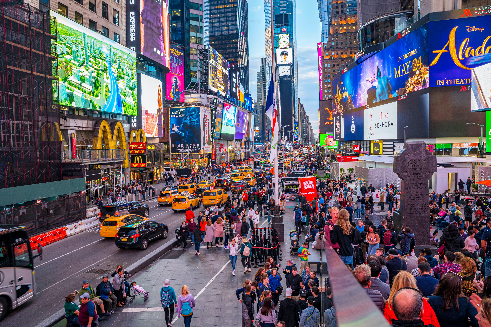
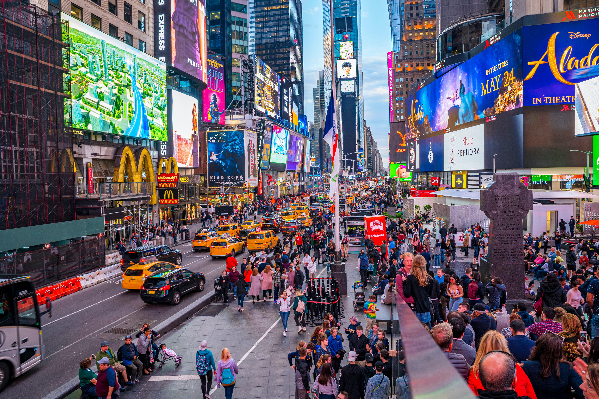

On peut voyager à cheval, à pied, en autocar, en voiture, en train, en bateau, en avion. On voyage de jour, ou de nuit, avec ou sans argent. On voyage seul, en famille, en groupe. La destination est proche ou lointaine : dans la province voisine ou au bout du monde.
On voyage pour se distraire, pour s’instruire, pour étudier, pour chercher la sagesse. Le voyage permet de s'échapper de notre quotidien et de casser la routine dans laquelle nous sommes installés. Partir à l'aventure vers l'inconnu nous fait accomplir des choses hors du commun dans un environnement bien souvent très différent de ce que l'on peut connaître.
Parce que les voyages – qu'il s'agisse de s'y préparer, d'en profiter ou de s'en souvenir – peuvent nous rendre plus heureux en nous sortant du rythme quotidien de la vie et en nous faisant découvrir de nouvelles cultures, de nouveaux lieux, de nouvelles personnes et même de nous-mêmes.
Voyager permet aussi de se (re)découvrir et serait bénéfique pour le développement personnel. La confiance en soi se développe quand on se surprend, par exemple, à prendre des décisions dans des situations inhabituelles ou à réussir à se faire comprendre dans une langue inconnue.
Le mot voyage est sans doute le plus ancien puisqu'il vient du latin viaticum, proprement « argent et provisions emportés en voyage », puis « voyage » lui-même. Au Moyen Age, le mot désigne surtout les pèlerinages et les croisades.
Pleins d'endroits m'attirent. L'Italie (en particulier la Toscane), l'Espagne, la France, le Portugal, l'Angleterre, la Grèce, New York, la Californie, le Japon, la Polynésie Française et beaucoup d'autres...

 

Histoire du voyage
Dès l’Antiquité grecque
Des déplacements réguliers et importants s’effectuent vers quelques sites réputés tels les grands sanctuaires de Delphes, d’Eleusis et Olympie qui attire avec ses jeux. Avec l’Antiquité romaine se développent les déplacements vers des lieux de villégiature (Herculanum) et les pèlerinages (sanctuaires de Grèce, d’Egypte, d’Asie Mineure), entraînant la mise en place de diverses infrastructures d’accueil (auberges, gîtes…).
À partir du moyen Age
Les échanges commerciaux (les routes vers l’Orient, les grandes foires commerciales), la ferveur religieuse (pèlerinages vers Saint-Jacques de Compostelle, La Mecque…) entraînent une intensification des déplacements.
Renaissance
La période de la Renaissance qui apporte de nouvelles considérations sur le monde, favorise une nouvelle idée du voyage : le voyage d’agrément et de découverte. Les artistes et les philosophes visitent l’Italie qui devient le pays le plus prisé du continent européen.
Au XVIIIème siècle
Au XVIIIème siècle, les voyages se multiplient initiés en partie au XVIIème siècle par les jeunes aristocrates anglais qui effectuent « le Grand Tour » . Ce Grand Tour, voyage initiatique destiné à parfaire l’éducation et les humanités est à l’origine du mot « tourist ». A cette époque en Françe, le terme "touriste" s’emploie pour désigner des "voyageurs qui ne parcourent des pays étrangers que par curiosité et désœuvrement et se dit surtout des voyageurs anglais en France, en Suisse et en Italie"(Littré de 1803). C’est également à cette époque que les fabricants de bagages, appelés alors Layetiers-Emballeurs vont développer leur talent et leur ingéniosité, pour devenir de véritables entreprises.
Jusqu'au millieu du 19ème siècle
Période des précurseurs, le voyage est une véritable aventure : il est long et dangereux. Les conditions de voyage sont difficiles et l’on parle « d’aventuriers » et « d’explorateurs ». On se déplace à pied, à cheval, en diligence, ce qui nécessite d’emporter avec soi de nombreux et encombrants bagages. De longs cortèges de chariots transportent malles, cantines et coffres… Puis le voyage va connaître un véritable essor. Le mot "tourisme" apparaît en 1841, année même où Thomas Cook ouvre en Angleterre une agence de voyages. La publication des Mémoires d’un touriste de Stendhal popularise ce mot.
La révolution industrielle et les progrès technologiques
permettront l’évolution et la multiplication des moyens de transports. Le temps et les distances vont se réduire. L’industrialisation du 19ème siècle va donc ouvrir de nouveaux horizons aux voyageurs et facilitera l’essor de différentes formes de voyages dont le caractère à l’origine "utilitaire" s’amenuise au cours du siècle pour laisser place au tourisme d’’agrément : le tourisme thérapeutique, la découverte de la montagne, les bains de mer, le tourisme sportif… De nombreuses organisations touristiques et l’édition de guide de voyages verront le jour en France. Les premiers voyages organisés gèrent le transport des voyageurs, la prise en charge des bagages, l’hébergement et les repas.
Au XXème
avec la loi des premiers congés payés de 1936 puis durant les Trente Glorieuses, le tourisme va se développer jusqu’à devenir un « tourisme de masse ». Qu’ils soient expéditions, périples, croisières, excursions, pèlerinages, pérégrinations, balades, promenades, randonnées, tours, tournées, virées… pour chaque voyage, le bagage sera adapté. Il va évoluera pour remplir une double fonction : faciliter la vie des usagers et protéger leurs effets.